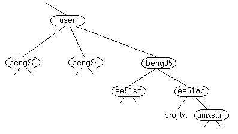

This session concerns UNIX/LINUX, which is a common operating system. By operating system, we mean the suite of programs which make the computer work. UNIX is often used in workstations and servers. Mac OS X is a UNIX operating system. Linux operating systems, though technically not UNIX, are extremely similar and are considered "UNIX-like". All aspects of this tutorial apply to both UNIX and Linux operating systems, though in most cases we will only mention LINUX for brevity. In this class, your Docker container will be running CentOS Linux (which itself is derived from Red Had Enterprise Linux) which is what we will use to work with Hadoop.
The LINUX operating system is made up of three parts; the kernel, the shell, and the programs.
The kernel of LINUX is the hub of the operating system: it allocates time and memory to programs and handles the filestore and communications in response to system calls.
As an illustration of the way that the shell and the kernel work together, suppose a user types rm myfile (which has the effect of removing the file myfile). The shell searches the filestore (i.e., the list of files on the computer) for the file containing the program rm, and then requests the kernel, through system calls, to execute the program rm on myfile. When the process rm myfile has finished running, the shell then returns the LINUX prompt to the user, indicating that it is waiting for further commands.
The shell acts as an interface between the user and the kernel. When a user logs in, the login program checks the username and password. When the user opens a terminal, the kernel starts another program called the shell. The shell is a command line interpreter (CLI). It interprets the commands the user types in and arranges for them to be carried out. The commands are themselves programs: when they terminate, the shell gives the user another prompt ($ on our systems).
The adept user can customise his/her own shell, and users can use different shells on the same machine. We will be using the bash shell by default.
The bash shell has certain features to help the user inputting commands.
Filename Completion - By typing part of the name of a command, filename or directory and pressing the [Tab] key, the bash shell will complete the rest of the name automatically. If the shell finds more than one name beginning with those letters you have typed, it will beep; pressing tab again will then display all names that match.
History - The shell keeps a list of the commands you have typed in. If you need to repeat a command, use the cursor keys to scroll up and down the list or type history for a list of previous commands.
Everything in LINUX is either a file or a process.
A process is an executing program identified by a unique PID (process identifier).
A file is a collection of data. They are created by users using text editors, running compilers etc.
Examples of files:
All the files are grouped together in the directory structure. The file-system is arranged in a hierarchical structure, like an inverted tree. The top of the hierarchy is traditionally called root.

In the diagram above, we see that the directory ee51ab contains the subdirectory unixstuff and a file proj.txt
In our case, we will start a terminal session by running a bash shell within a docker container, e.g., by typing docker run -it centos bash in the terminal or command line of your host machine.
A terminal window will appear with a prompt, waiting for you to start entering commands.
The command prompt, which will have the form
[root@7a739628b4b1 Desktop]#
is configured to take the form [user@hostname current_directory]#.
Here, the user is root@7a739628b4b1 and the current directory is /home/cloudera/Desktop (though only the last level of the directory structure is shown). Note that the hostname is the same as the docker container ID. The prompt ends with a number sign (#). In the tutorials that follow, the command prompt will be denoted only by the # sign, for simplicity.


Last modified: July 2015